Made by the machine · 4 Oct 2026
A creator ad that was already winning went in. Six finished versions came out — cast, shot, voiced, edited, covered, written and packed for Meta — by one line that runs on its own and stops only to ask.
Everyone in this ad is AI-made. Kerri and her doctors are dramatised characters, not real customers or real doctors. The ad says so too.
01 · The line
Each station takes one thing in and hands one thing on. Nothing about this ad lives in the machine. Its choices sit in its own files, so the next brand, product or person goes through the same line.
01 · Swipe
A creator's video already holding attention in the feed: a woman asks three experts the same question and gets three different answers.
02 · Teardown
Stripped to structure: three visits, three answers, the turn on the third, the close. The brand that made it is taken out; the shape stays locked.
03 · Brief
Brown spots. Doctor one bleaches. Doctor two lasers. Doctor three hands her a turmeric face scrub. Every line comes from the customer's own words, nothing invented.
04 · Pictures
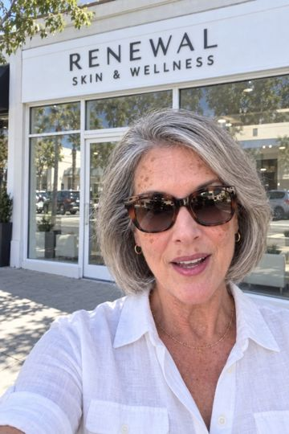
One locked picture per scene, made from real references. The product is checked against its measured shape in every frame.
05 · Clips + voices
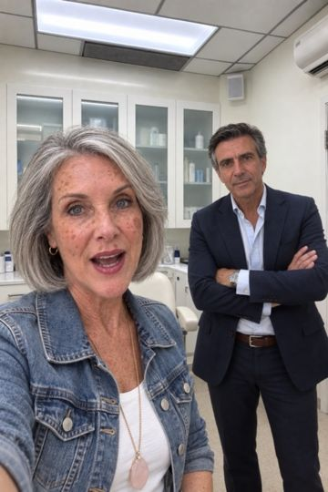
Every clip starts from its approved picture, so faces never drift. Each person keeps one voice through the whole ad.
06 · Edit
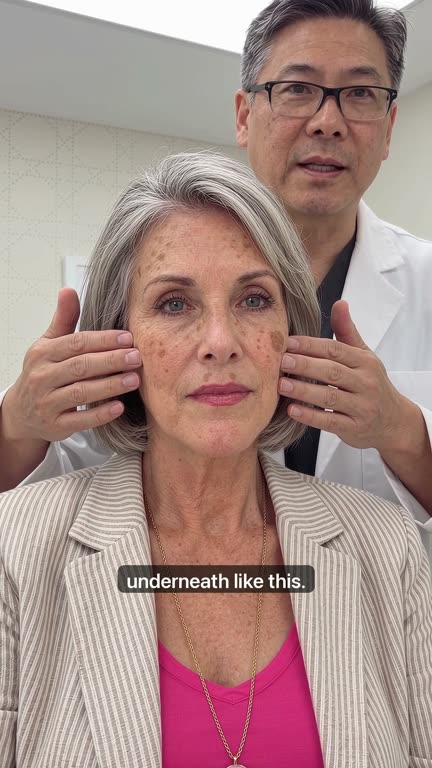
Programmed, not hand-cut. One command plans, cuts, checks and renders all six versions. Every check that fails stops the line.
07 · Covers + words
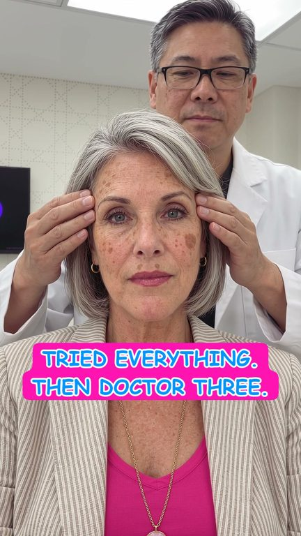
A cover for every version in the creator's own card style, plus the post text, written from our best ad on the account.
08 · Hand-off
Everything lands in one checked folder: videos, covers, words, the landing page. It waits there for one Approve click. After that it builds itself.
02 · Cast and pictures
Kerri, 64, and her three doctors. Each one is built from real reference photos, then locked, so the face in the last scene is the face in the first.
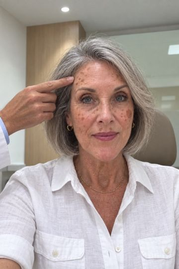
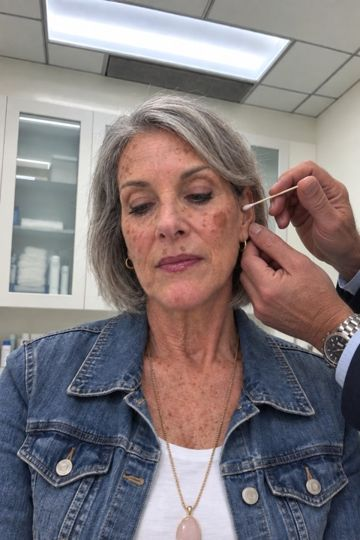
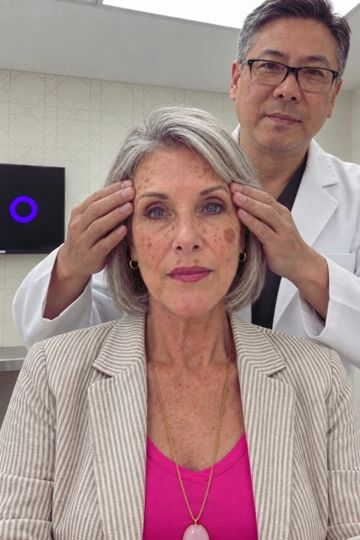
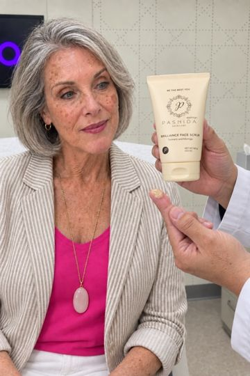
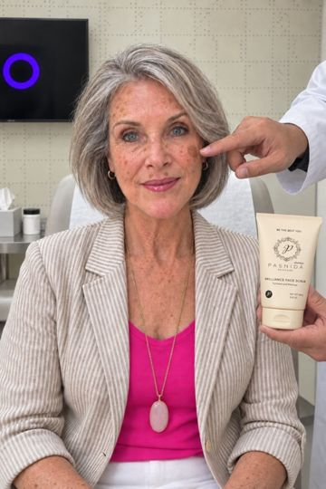
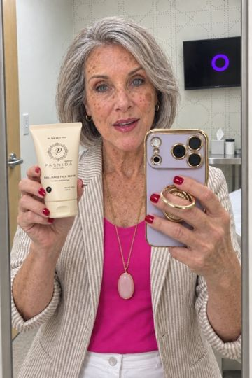
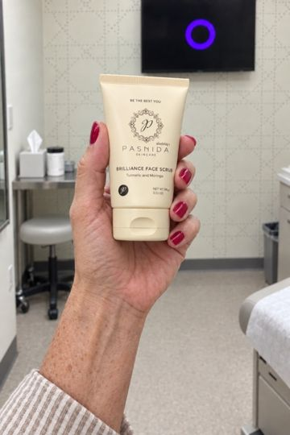
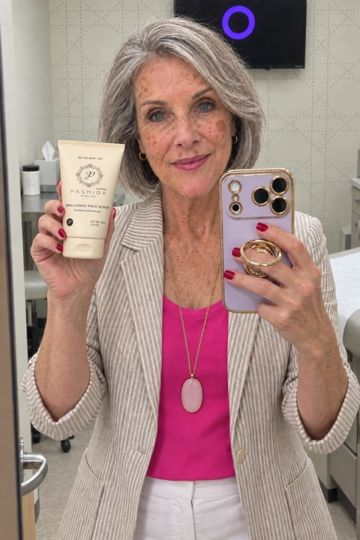
22 pictures in all, one per scene. Scroll the strip →
03 · The edit
The editing is written into the system, not done by hand. The same seven steps run for every ad, and a step that finds a problem stops the line instead of passing it on.
04 · Covers
The look is the creator's own: a hot-pink card with blue letters and a white outline. It's ugly on purpose, because it's what stopped people. Placement is read from each frame. It finds faces, lips and hands, and the card goes where it covers none of them.
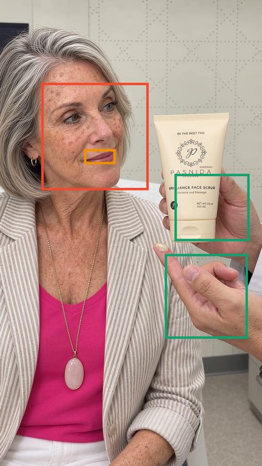
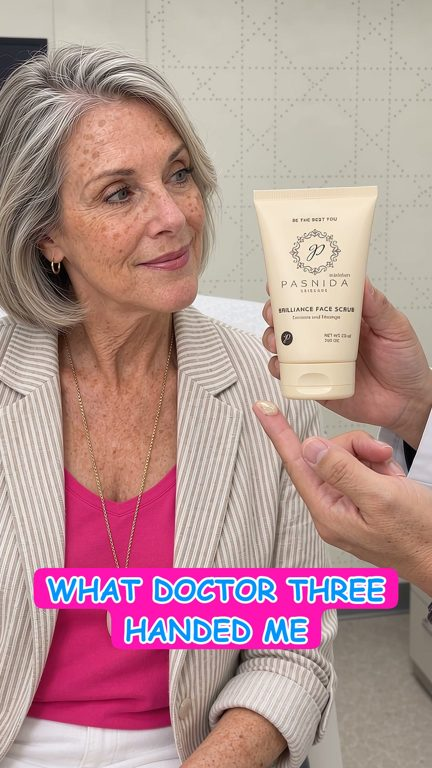
Each of the six versions gets its own line, written by the copy tool from the ad's own story:
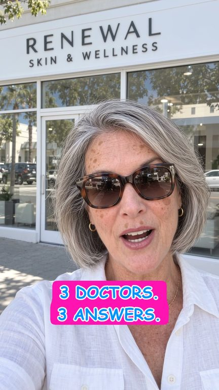
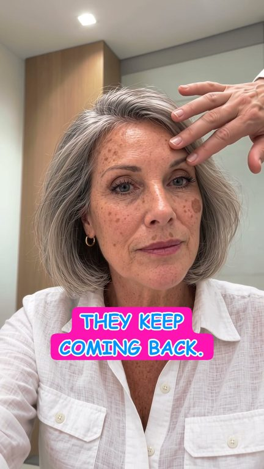
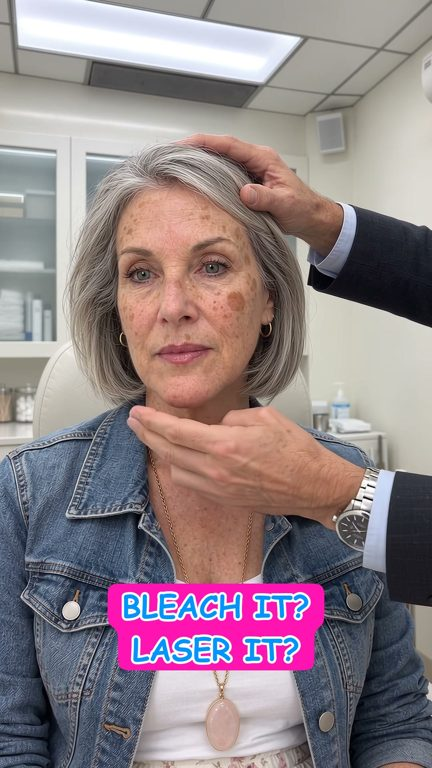
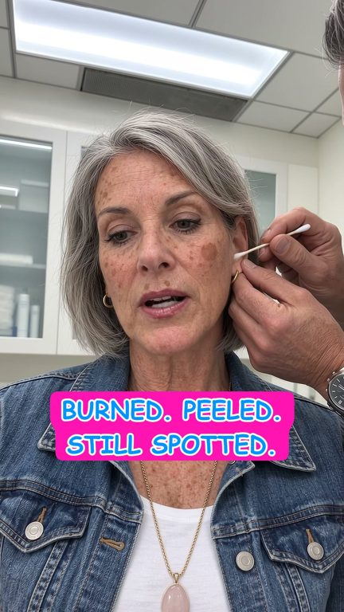
It runs on the Mac's own vision, local and free. If a frame has no clear spot, the line stops and asks for another frame.
05 · The words
The copy tool starts from the post text of our best-performing ad on the account. It keeps that ad's structure and fills it with this video's details. A check refuses anything the site doesn't say.
Two doctors said bleach or laser for the dark spots on her face. The third handed her a Thai turmeric scrub. Our family recipe of turmeric, moringa, ginger and chamomile. 60 seconds, once or twice a week. Turmeric helps limit excess pigment, so the same spots don't keep appearing.
Headlines
Three post texts, two headlines and two descriptions. Meta mixes them with the six videos and learns which combination holds people.
06 · The hand-off
The finished ad waits on one page with nine checks beside it. One Approve and it builds the rest through Meta's own connection, all paused. Nothing spends until the campaign is switched on.
You
ApproveThe only step a person takes.Campaign
Found or madeUsed as it is if it already exists, otherwise made — paused.Ad set
Named by who it's for and the angleBroad US audience, optimised for purchases — paused.Ad
One flexible ad6 videos, each with its own cover · 3 texts · 2 headlines · the landing page. Meta shows each person the mix that holds them.07 · The six openings
The first seconds decide whether anyone stays. Each version opens differently, with the same body after. These are the first twelve seconds of each, sound on.
What changes now
Every fix this ad needed is now a rule or a check in the machine. Any brand, product, person or swipe gets it automatically.